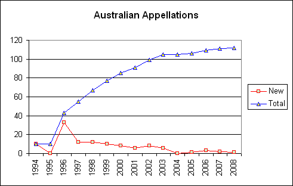

Australia's GIs
Australia's high quality inexpensive wines have caused a surge in the popularity of Australian vintages over the past decade. To come in line with international standards the Geographic Indication (GI) system was created. These appellations are regulated by the Australian Wine and Brandy Corporation. In order of decreasing size they are Zones, Regions and Sub-Regions. In addition, the Australian States and Territories are also considered GIs.
The AWBC was created by a government statute of 1981 empowering the body "To enhance the operating environment for the benefit of the Australian wine industry by providing the leading role in: market development; knowledge development; compliance; and trade." It oversaw the pulling up of vineyards in the late 1980s and the creation of cleanskins in the early 2000s to deal with production levels that are much higher than local demand. This has also led Australia to become one of the leading exporters of wine in the world.
In 1994 the Geographic Indications Committee was created as a part of the AWBC to codify the nomenclature of Australia's wine appellations. The growth in the number of appellations is shown in the figure below. The Australian States were declared appellations immediately in 1994, but in wasn't until 2 years later that zones were created. No new zones has been created since 1996, but every year except 2004 has seen more and more regions and sub-regions being declared.

|